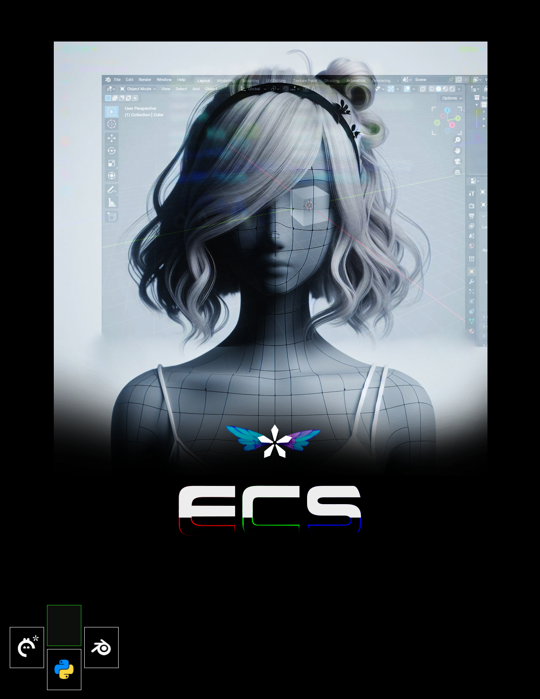

log
Giving everything to mod this survival horror into a computer fantasy.
2024
GraphSail: IDE for open-ended invention pathfinding with graph neural networks.
Writing ECS Graphstar.
In the spirit of open source, feel free to read the draft, but be nice to me okay?
2023
Summer/FallGenerate scene graph dynamics of Fablehaven
Simulate a vacuum insulated panel that can be fabricated from biogenic molecules
Read 달빛조각사
Applying Machine Learning with Graphs CS224W to machine imagination for open source hardware.
- Financial Surplus-Sustaining Individiating Concurrent Engineering AI Team Deployment
GPT-4 - Synthetic Creature Bioengineering
bioRxiv - Generative Seastead Physically Based Simulation
Volumetric Rendering Physics Based Deep Learning Evolutionary Neural Networks - Book Simulation Game Engine
Motion Diffusion LLM Efficiency Ghost Corpus, an IDE for writing fiction - Consciousness and Time
Computational Jungian Analysis WA-01LF - Social Robotics
Social Signals CS224N/SQuAD2.0
2022
Spring/Summer- BCI Analysis
Ed Boyden Tiley Tree Method Erowid Neuralink - Dynamic Environments-To-Think-In
Dynamicland Neri Oxman MIT Software Design Group Creativity Enhancing Robots Physically Based Rendering Vulkan - Building with Information
MIT's Center for Bits and Atoms Classes OpenSCAD Open Source Ecology Integrated Learning FromSoftware - Reconfigurable Computing
Berkeley Computer Science 152/252A Brown EN2911X Reconfigurable Computing - Retro Pixel Art
MISTer GDC Vault NEC PC-9801 - Permaculture Robotics
ROS Permies Soft Robotics Isaac Asimov's Robot Series
- Nanotechnology
The Diamond Age Nanosystems by K. Eric Drexler EUV lithography- Neuro Console Engineering
Feynman Lectures on Physics MIT Medical Device Design Program RISC-V CPU/GPU on FPGA- Post Scarcity Design
Sougwen Stable Diffusion AI generated games with RLHF- Death Mitigation and Resurrection Strategies
Cryonics Engineering a Safer World by Nancy G. Leveson- AI
OpenAI Spinning Up BASALT Robot Brains Podcast Probabilistic Programming Languages Functional Analysis- Adaptive Learning Tutor Design and Engineering
Anki Research-Based Learning Memory Techniques - Neuro Console Engineering
2021
Tanking at the forefront of the open design movement to ensure
- universal freedom from biological constraints via aging and brain simulation research with open science laboratories
- development of artificial general intelligence as playful environments